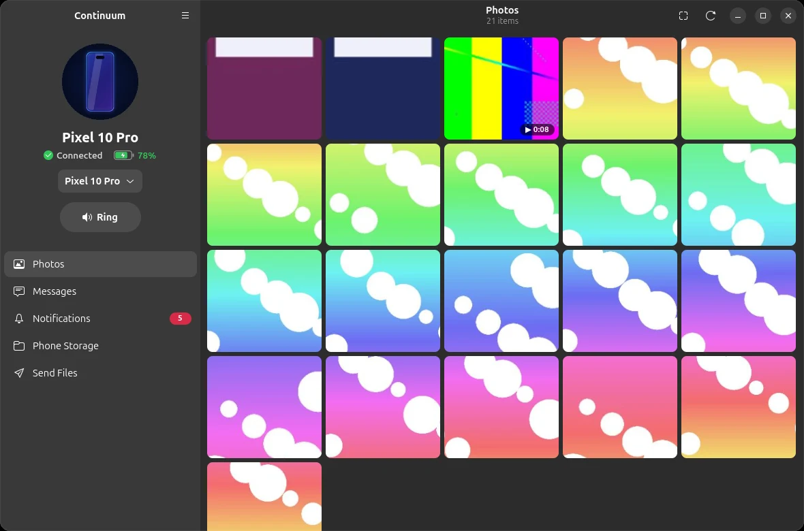

Photos, messages, notifications with quick reply, files and one clipboard across your phone and your Ubuntu desktop. Like Phone Link and Apple Continuity, but open source and private.

Open the app, or use the Quick Settings tile next to Wi-Fi and Bluetooth.
Browse your whole gallery, portrait and landscape. Open, copy or save any photo; videos play in your video player.
Read your SMS conversations and reply from the keyboard you're already typing on.
Phone notifications pop up on the desktop with Reply and their own buttons. Do Not Disturb is respected.
Copy on one device, paste on the other: text and images, automatically.
Share photos or files to your PC: they're saved and already on the clipboard, ready for chat apps, the terminal or Files.
Browse every folder on the phone and download any file. Drop files on the window to send them back.
Ring it at full volume, even on silent, from the app or Quick Settings.
Level and charging state in the app and in Quick Settings.
Built with GTK 4 and libadwaita, so it fits right in, in light and dark.
No accounts, no IP addresses, no config files.
Ubuntu, Fedora, Arch and their relatives, with GNOME. Paste this into a terminal. Updates then arrive with your system's own updates.
curl -fsSL https://sharjeelmazhar.github.io/continuum/install.sh | sh
Download the Android app (Android 10 or newer) and open it. It updates itself from then on.
Open Continuum on the PC, click Pair a Phone, and scan the QR code with the phone. Done.
Your phone talks to your computer directly, on your own Wi-Fi.
Nothing goes through anyone's server. There's no account to create.
Every connection is TLS 1.3 with certificates pinned when you pair.
Each feature asks for its own permission, and you can turn any of them off.
GPL-3.0. Read the code, build it yourself, or help make it better.